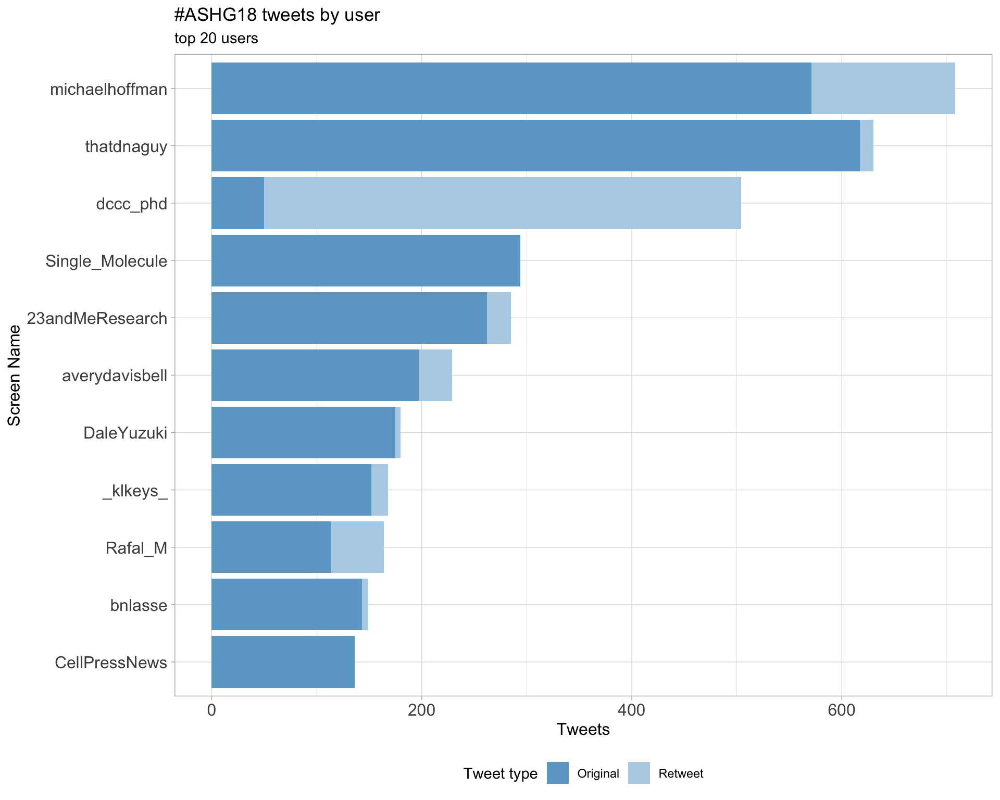
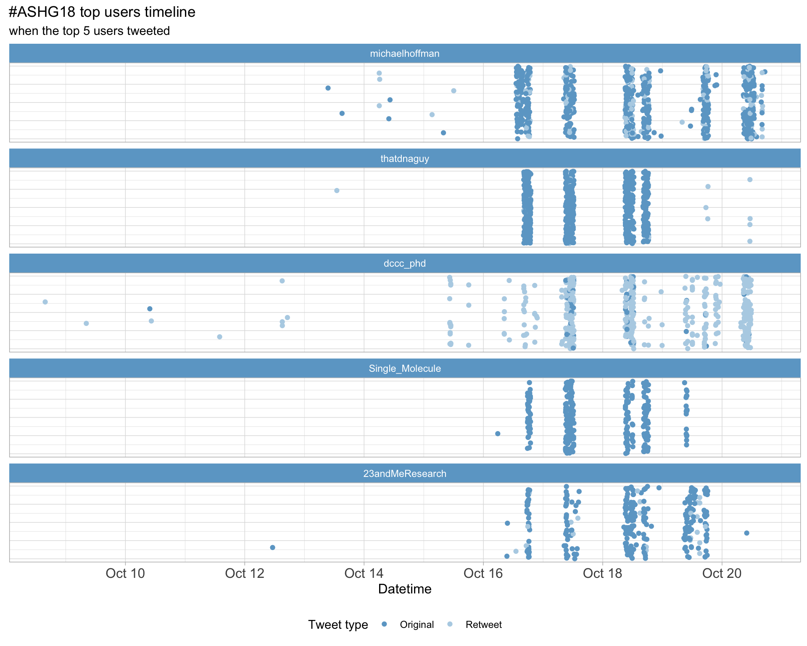
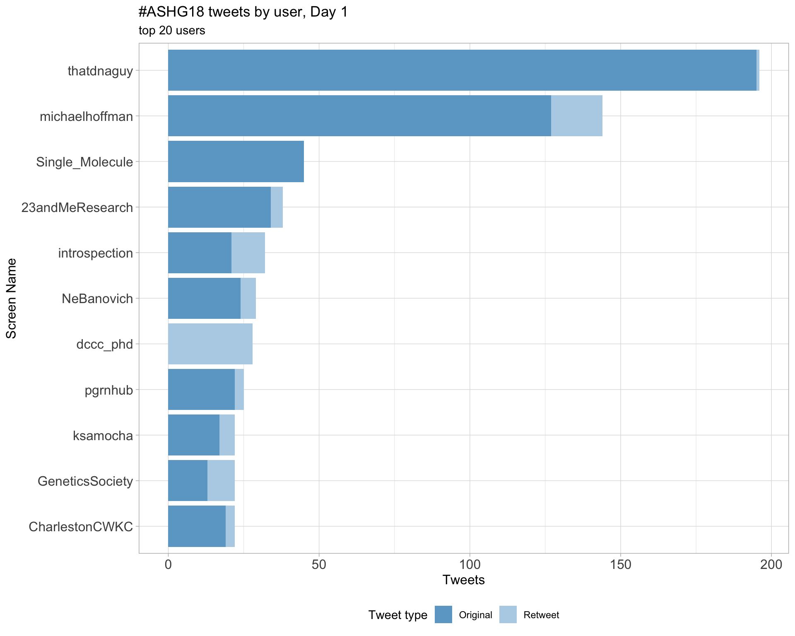
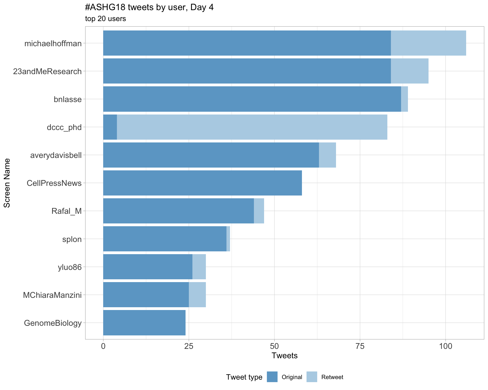
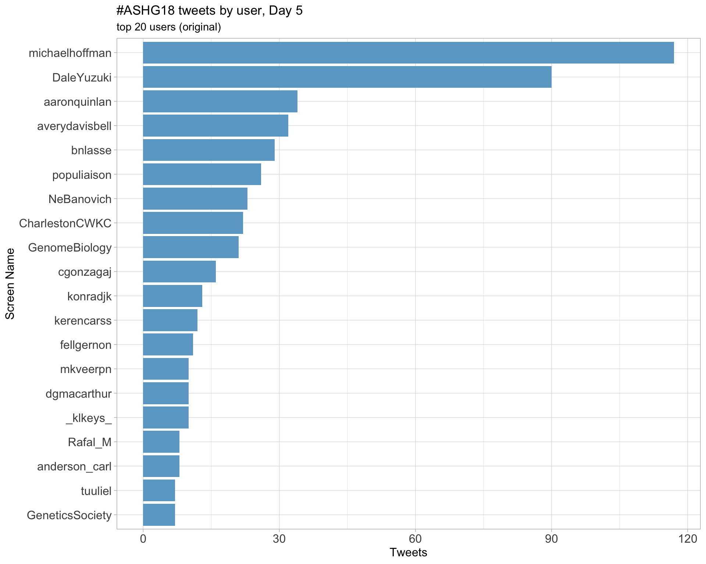
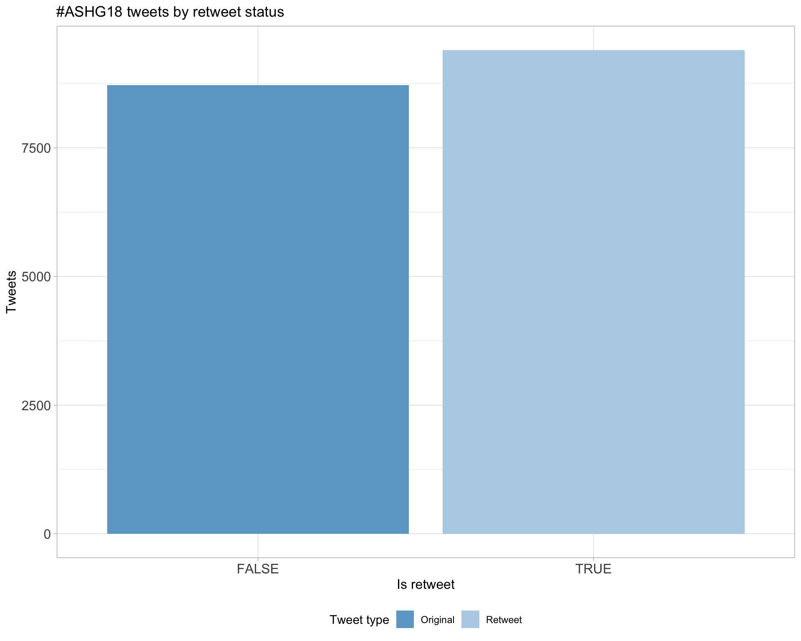
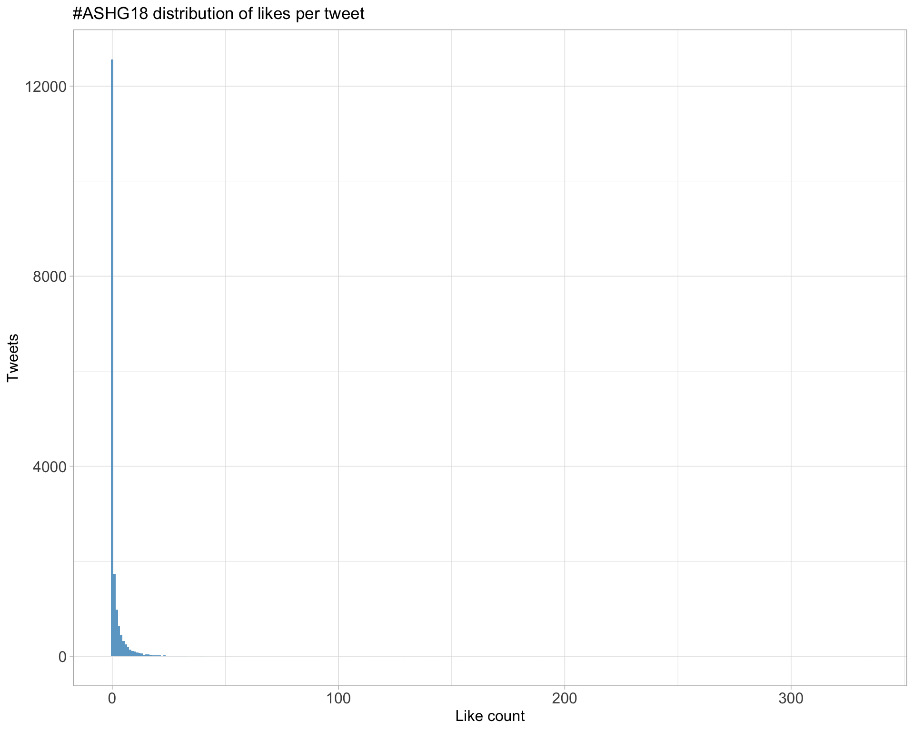
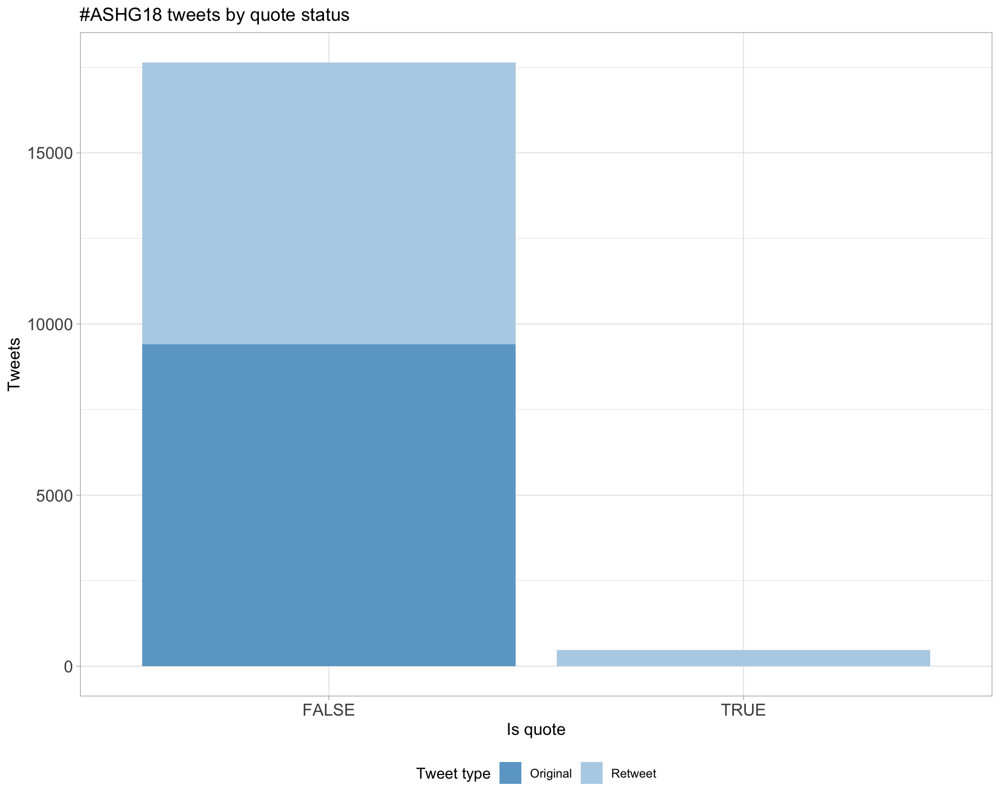
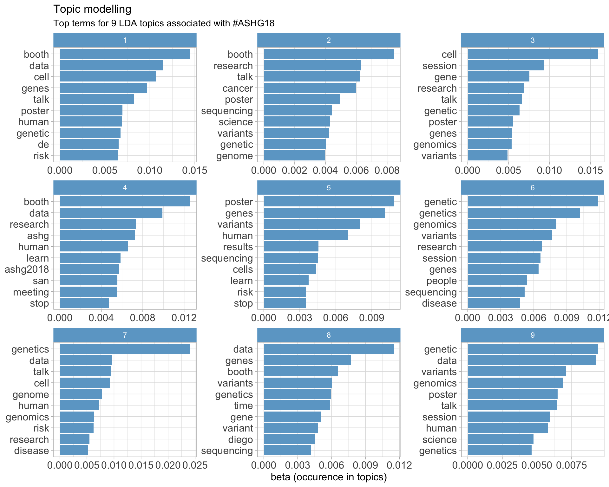

Twitter coverage of the American Society of Human Genetics 68th Annual Meeting
Luke Zappia
2018-10-18 08:36:12
Parameters
| Parameter | Value |
|---|---|
| Hashtag | #ASHG18 |
| Conference | American Society of Human Genetics 68th Annual Meeting |
| Time Zone | America/Los_Angeles |
| Days | c(“2018-10-16”, “2018-10-17”, “2018-10-18”, “2018-10-19”, “2018-10-20”) |
| Accent colour | skyblue3 |
| Pallete | Set1 |
| Topics k | 6 |
| Fixed | FALSE |
1 Introduction
An analysis of tweets from the American Society of Human Genetics 68th Annual Meeting conference. A total of 8120 tweets from 2334 users were collected using the rtweet R package.
2 Timeline
2.1 Tweets by day

2.2 Tweets by day and time
Filtered for dates 2018-10-16 - 2018-10-20 in the America/Los_Angeles timezone.

3 Users
3.1 Top tweeters

3.2 Top original tweeters

3.3 Retweet proportion

3.4 Top tweeters by time

3.5 Top tweeters by day
3.5.1 All tweets
Day 1

Day 2
Day 3

Day 4

Day 5

3.5.2 Original tweets
Day 1

Day 2

Day 3

Day 4

Day 5

3.6 Sources

4 Networks
4.1 Replies
The “replies network”, composed from users who reply directly to one another, coloured by page rank.

4.2 Mentions
The “mentions network”, where users mention other users in their tweets. Node colour, label size and alpha adjusted according to PageRank score.

5 Retweets
5.1 Retweet proportion

5.2 Retweet count

5.3 Top retweets
| screen_name | text | retweet_count |
|---|---|---|
| erlichya |
So what did we have this week in human genetics? * A Senator taking a DNA test to fight political opponents * Major parts of US can be under genetic surveillance via DTC tests * UKBB reports results for 500K people * Nature calls for PRS in clinic The revolution is here #ASHG18 |
68 |
| Hutton | GRC: “indefinite postponement of GRCh39”, instead will provide iterative improvements to GRCh38. “If you have been holding off on adoption of 38 and are instead waiting to jump to 39…please don’t!” #ASHG18 | 57 |
| NatureRevGenet | Congrats to @skathire on the #ASHG18 Curt Stern Award! A free-to-read link to his Review on ‘Genetics of coronary artery disease: discovery, biology and clinical translation’ is here: https://t.co/NzqvWJIA0O https://t.co/elVXYJmyUO | 55 |
| GeneticsSociety | “We must recognize the disruptive nature of our work…maintaining sensitivity to the nature of our work is important, but we must recognize what exciting work it is.” –@nelsondl at #ASHG18 presidential address https://t.co/begWoDEVhm | 52 |
| heikorunz | On spot for #ASHG18 our ~700k participant study out in @NatureComms asking: Can meta-PheWAS across large biobanks (@uk_biobank, @23andMe, @FIMM_UH, @ChildrensPhila) facilitate decision-making during drug discovery? 1/n https://t.co/80HMiDWPPl | 52 |
| david_a_knowles | ML, functional genomics, RNA-splicing regulation or hi-throughput screens float your ⛵️? I have postdoc positions available in my shiny new lab at @nygenome / @Columbia. Lets chat at #ASHG18 or go to https://t.co/cY6qPVnhqb Please RT! | 51 |
| KeoluFox | Interested in Senator Warren‚Äôs DNA test? üòà Join @NanibaaGarrison and I, WED Oct 17th @ 10:30 am to discuss, ‚ÄúSilent Genomes: Indigenous-led Initiatives on Addressing Equity in Genomics Health Care and Research‚Äù We‚Äôll discuss tribal identity, genetics, and much MUCH more #ASHG18 https://t.co/dLICun72xC | 48 |
| dgmacarthur | KK: The new data set is live, with an awesome new browser! https://t.co/uMAoxqh5jO Thanks to the tireless work of our engineering team, Nick Watts and @mattsolomonson, working right up to about 3 minutes before this talk (DM: can confirm.). #ASHG18 | 35 |
| aaronquinlan | @mgymrek introduces the Linked Reads Community Challenge (@linkedreads), a DREAM-like challenge to promote method development for linked read sequencing technologies. Further details at https://t.co/3kQB2HwlDC! #ASHG18 | 30 |
| IBJIYONGI | Tomorrow @KeoluFox and @NanibaaGarrison – two indigenous scientists – will be giving conference talks on genomes and identity, and the session will be livetweeted on the hashtags: #SilentGenomes #ASHG18 | 26 |
6 Favourites
6.1 Favourite proportion

6.2 Favourite count

6.3 Top favourites
| screen_name | text | favorite_count |
|---|---|---|
| erlichya |
So what did we have this week in human genetics? * A Senator taking a DNA test to fight political opponents * Major parts of US can be under genetic surveillance via DTC tests * UKBB reports results for 500K people * Nature calls for PRS in clinic The revolution is here #ASHG18 |
188 |
| emo_davenport | Sad to be missing out on #ASHG18 this year due to my own little genetic experiment, but my amazing advisor @ClarkLabCornell is giving my talk on incorporating the microbiome into GWAS on Thursday at 12pm in Room 6C. Check it out! https://t.co/OPN85lkz7y | 144 |
| GeneticsSociety | “We must recognize the disruptive nature of our work…maintaining sensitivity to the nature of our work is important, but we must recognize what exciting work it is.” –@nelsondl at #ASHG18 presidential address https://t.co/begWoDEVhm | 128 |
| skathire |
Arrive in SD for @GeneticsSociety #ASHG18 Cab driver a Greek Orthodox Palestinian from Jerusalem Tell him that I am here for genetics meeting And his 1st ?: ‚ÄúIs the ancestry stuff accurate?‚Ķ@Ancestry test told me that I‚Äôm 27% Greek and I know I am more than that.‚Äù üò≥ |
114 |
| NatureRevGenet | Congrats to @skathire on the #ASHG18 Curt Stern Award! A free-to-read link to his Review on ‘Genetics of coronary artery disease: discovery, biology and clinical translation’ is here: https://t.co/NzqvWJIA0O https://t.co/elVXYJmyUO | 113 |
| jcbarret | Spot the Europeans. #ASHG18 https://t.co/eEFVGzhEEi | 113 |
| heikorunz | On spot for #ASHG18 our ~700k participant study out in @NatureComms asking: Can meta-PheWAS across large biobanks (@uk_biobank, @23andMe, @FIMM_UH, @ChildrensPhila) facilitate decision-making during drug discovery? 1/n https://t.co/80HMiDWPPl | 101 |
| BroadGenomics | Congratulations and thank you @skathire for all your contributions to the field of genomics and the positive impact on people’s lives. The #ASHG18 Curt Stern Award is well deserved. https://t.co/axJWQ9Ilsc | 89 |
| KeoluFox | Interested in Senator Warren‚Äôs DNA test? üòà Join @NanibaaGarrison and I, WED Oct 17th @ 10:30 am to discuss, ‚ÄúSilent Genomes: Indigenous-led Initiatives on Addressing Equity in Genomics Health Care and Research‚Äù We‚Äôll discuss tribal identity, genetics, and much MUCH more #ASHG18 https://t.co/dLICun72xC | 86 |
| dgmacarthur | KK: The new data set is live, with an awesome new browser! https://t.co/uMAoxqh5jO Thanks to the tireless work of our engineering team, Nick Watts and @mattsolomonson, working right up to about 3 minutes before this talk (DM: can confirm.). #ASHG18 | 79 |
7 Quotes
7.1 Quote proportion

7.2 Quote count

7.3 Top quotes
| screen_name | text | quote_count |
|---|---|---|
| klkeys | Join me at this timely and important session! I am excited to see @KeoluFox and @NanibaaGarrison lead the discussion on #silentgenomes at #ASHG18 https://t.co/wpntgCjpr8 | 5 |
| AliciaBByrne | Setting my alarm for bright and early tomorrow morning so I can follow the #SilentGenomes session at #ASHG18. Great that both the talks and discussion will be live-tweeted. https://t.co/OgwuecBJFg | 5 |
| kejames | Timely #ASHG18 session at 10:30am PDT today on Indigenous-led initiatives in genomics, featuring an all-indigenous panel. Hashtag is #silentgenomes. h/t @MisterWu78 https://t.co/cM2vIhUquj | 5 |
| hcmefford | Fantastic panel of indigenous scientists in this #SilentGenomes session. #ASHG18 https://t.co/qTKmSpjK4q | 5 |
| blueyedgenes | And so the #ASHG18 FOMO continues. I’ll be glad to see some live tweeting. Also ok to keep deleting all the vendor session emails I get, despite not being registered! https://t.co/BpthB4uLMq | 5 |
| drsarahdoom | I’ll be attending #ASHG18 next week. Come chat with me about de novo assembly in humans and our recent release of a phased diploid genome https://t.co/rpuHQ1qL7L @PacBio @zevkronenberg @PhaseGenomics https://t.co/x7SQmDRpkL | 3 |
| Magdoll | I’ll be talking at the @PacBio workshop at #ASHG18 about Iso-Seq, Thu 1230-145PM! Also, Co-lab on Fri 10-1030AM. Also a platform talk Wed 9AM “New Frontiers in Computational Genomics” https://t.co/lIpmmiCBoz | 3 |
| AydenizRiki | I’ll be at #ASHG18 next week. Loads of interesting talks and posters about the advances made using @pacbio long reads and rumour has it there will be socks to give away! (Socks not guaranteed) https://t.co/HDXiDhSRJH | 3 |
| ElenaSorokin | @NatalieTelis is at it again, continuing the awesome project to understand question answering at #ashg18; link is below https://t.co/ZZUfqLgCgd | 3 |
| DNAmlin | This is a bummer. BTW, are the intervals just from Binom(f;n) or are we all part of an elaborate intra-#ASHG18 bootstrapping procedure?? https://t.co/hMk5bvXh7n | 3 |
8 Media
8.1 Media count

8.2 Top media
| screen_name | text | favorite_count |
|---|---|---|
| emo_davenport | Sad to be missing out on #ASHG18 this year due to my own little genetic experiment, but my amazing advisor @ClarkLabCornell is giving my talk on incorporating the microbiome into GWAS on Thursday at 12pm in Room 6C. Check it out! https://t.co/OPN85lkz7y | 144 |
| GeneticsSociety | “We must recognize the disruptive nature of our work…maintaining sensitivity to the nature of our work is important, but we must recognize what exciting work it is.” –@nelsondl at #ASHG18 presidential address https://t.co/begWoDEVhm | 128 |
| NatureRevGenet | Congrats to @skathire on the #ASHG18 Curt Stern Award! A free-to-read link to his Review on ‘Genetics of coronary artery disease: discovery, biology and clinical translation’ is here: https://t.co/NzqvWJIA0O https://t.co/elVXYJmyUO | 113 |
| jcbarret | Spot the Europeans. #ASHG18 https://t.co/eEFVGzhEEi | 113 |
| BroadGenomics | Congratulations and thank you @skathire for all your contributions to the field of genomics and the positive impact on people’s lives. The #ASHG18 Curt Stern Award is well deserved. https://t.co/axJWQ9Ilsc | 89 |
| dgmacarthur | Yes, it’s time for another overwhelming week of science at the American Society of Human Genetics #ASHG18 meeting. Here’s what our team (and close affiliates!) will be presenting at the meeting this year: https://t.co/eUxnFobJYR https://t.co/6RjsF69OXe | 73 |
| RyanTewhey | Nice to be back in San Diego for #ASHG18 . It is only Monday and I‚Äôve already feasted on üåÆ , üèÑ, did a beach üèÉ and caught up with old friends. Life is good here. https://t.co/NuvngUViut | 59 |
| michaelhoffman | Getting excited for #ASHG18! Who’s going? https://t.co/Zo2KaY9tVx | 58 |
| rplenge | Congratulations to @skathire on a deeply personal and successful scientific journey to understand the genetic basis of heart disease. #ASHG18 https://t.co/UiZHO2awNX | 51 |
| genetisaur |
Delay out of BOS, sprint across airport, miss connection in PHL. But wait! Another delay in PHL due to tire issue. Missed SAN curfew, so maybe flying to LAX then bus to SAN In other words, westbound red eye can’t hold us from #ASHG18! (Time travel maybe optimistic though) https://t.co/8YLZwPbEEY |
45 |
8.2.1 Most liked media image

9 Tweet text
9.1 Word cloud
The top 100 words used 3 or more times.

9.2 Bigram graph
Words that were tweeted next to each other at least 5 times.

9.3 Topic modelling
Top 10 words associated with 6 topics identified by LDA.

9.3.1 Representative tweets
Most representative tweets for each topic
Topic 1
| topic | screen_name | text | gamma |
|---|---|---|---|
| 1 | pmerel | #ASHG18 G. Gursoy qui nous confirme que memes les données brutes de génomique fonctionnelle (RNAseq) sont la source de Privacy Leaks. Elle propose une methode de protection qui reduit meme la taille des bam files de 90% !!!! | 0.2329029 |
| 1 | michaelhoffman | YE: Information in common identifiers in bits: Sex: 1 Eye colour: 1.4 ABO/Rhesus blood group: 2.2 State of residence: 5.0 Height: 5.0 Year of birth: 6.3 Day and month of birth: 8.5 Surname: 12.9 Zip code: 13.8 #ASHG18 | 0.2279109 |
| 1 | ivivek87 | For next 9 nights 9 airports and amazing multitude of science and knowledge gathering. Excited as a kid and looking forward to learn. SEA>SAN>ORD>ARN>HEL>CPH>IAD>SAN>SEA #CKD #DKD #Genomics #Bioinformatics #PrecisionMedicine #biomarkers #healthcare #ASHG18 | 0.2260426 |
| 1 | KempenLS | Conferences: - #ASHG18 - San Diego, 16-20 Oct - #NACFC18- Denver, 18-20 Oct with $GLPG - #ESMO18 - Munich, 19-23 Oct with $GEN, $BCART, $NANO, $CYAD - #ACR18 - Chicago, 19-24 Oct with $GLPG, $MOR - #ANA18 - Atlanta, 21-23 Oct | 0.2203413 |
| 1 | iGenomics | @erlichya : @23andMe files uploaded to Personal Genome Project (@PGorg), when unzipped, the filename may have person’s name. It only needs 28 bit info to identify a person. Zipcode provides 13.8bit, surname-12.9bit, hight-5.0, year of birth-6.3bit #ASHG18 #ASHG2018 | 0.2162797 |
| 1 | jvkohl | #ASHG18 Light-tracking in Brugmansia and light-activated microRNA biogenesis link biophysically constrained viral latency to all biodiversity via games for ages 10+. See for examples: Cytosis https://t.co/QKWSMw0Aqh and Subatomic https://t.co/Pm3gU9Y84T https://t.co/nklp5YkSxb | 0.2083670 |
| 1 | PittHUGEN | Muaaz Aslam presents his work w Frank Fan, @EleanorFeingold, Yeşim Demirci, & Ilyas Kamboh on rheumatoid arthritis in Pakistanis at Poster 2319. #ASHG18 | 0.2070368 |
| 1 | seqster | Seqster team collaborates w/@ATorkamani @ScrippsRTI @GeneticsSociety combining @23andMe #DNA + #healthrecords giving genetic risk scores for CAD a new enagagment tool in consumer genomics w/@MyGeneRank #peopledriven #cardiovasculardisease #DNA #EHR #ASHG18 https://t.co/4CoWo99YvK | 0.2005149 |
| 1 | jvkohl | Compare #ASHG18 search results for #microRNAbiogenesis to results of a Pubmed search for microRNA and microRNA biogenesis. https://t.co/OhKmmO5Zr1 https://t.co/2j7QVdniqD Ask population geneticists where microRNAs come from and vote for Republicans who know about light-activation | 0.2002385 |
| 1 | NCIEpiTraining | Don’t miss @colli_leandro present “Functional characterization of the 14q24 renal cancer susceptibility locus implicates SWI/SNF complex member DPF3” today, Wednesday 6pm PT room 6B: #ASHG18 @NCIChanock @mitchiela @daf421 @tim_myers @kbrowngenetics | 0.1989427 |
Topic 2
| topic | screen_name | text | gamma |
|---|---|---|---|
| 2 | StatGenDan | RD: 82 complex traits: widespread horizontal pleiotropy (21.7%); restrict to ‘putatively causal’ pairs of MR results: 48.7%. Outliers test: we can correct for pleiotropy in 45.8% of the tests. BMI -> C-reactive: one outlier SNV in APOE, causes 12% distortion in causal est #ASHG18 | 0.2002409 |
| 2 | big3bio |
It’s going ON in #Big3Bio regions today! In Boston - #PODD2018 from @ConferenceForum (https://t.co/fWtr1avVgW), & later @Xconomy’s Life Sci Disruptors (https://t.co/LnCTSCzjPQ) In SF - the BIO Investor Forum #BIF18 (https://t.co/zx8YDpr1KZ) In SD - #ASHG18 #events #partnering https://t.co/AVL2qcPgOv |
0.1969689 |
| 2 | thatdnaguy | #ASHG18 JK: Look at IQ in ASD. Individuals with ASD and an ID variant, lower IQ. ASD with ASD risk variant, higher IQ. Same trend for walking (earlier walking with ASD variants compared to ID variants). | 0.1911093 |
| 2 | StatGenDan | JK: some de novo variants for autism are even more enriched in non-autistic intellectual/developmental delay. Others are ASD preferential. Stronger neg selection in ID/DD- than ASD-preferential genes. ID/DD-preferential genes associated with walking later. #ASHG18 | 0.1909994 |
| 2 | lizworthey | ER: Studied age of walking in a cohort of patients with ASD and ID and IQ 30; found that patients with IQ 30 and ID walked later than IQ 30 and ASD; suggestive of different underlying mechanisms and pathways published as Bishop et al (think 2016?) #ASHG18 | 0.1898970 |
| 2 | impc | Guest post by Bum-Jun Kim (#ASHG18 talk: today, 4:30pm – 4:45pm in Room 6D) - RERE deficiency leads to downregulation of Gata4 and the development of ventricular septal defects https://t.co/WHGTAWXnhf | 0.1888008 |
| 2 | StatGenDan | JK: Strong selection against autism spectrum disorder => rare variants. 36K sequenced: families & case/control. Improved constraint-based metrics of deleteriousness: more signal for de novo mutations. Constraint metrics enrich for new variants. #ASHG18 | 0.1871657 |
| 2 | WuXiNextCODE | #WXNCatASHG | Watch as Irene C Blat will explore the 500K sample U.K. Biobank data in order to uncover interesting phenotypic combinations and stratify the data in preparation for genomic analysis. Learn more at https://t.co/YPdT51O1mC #ASHG18 https://t.co/cfBoTwB1xA | 0.1869845 |
| 2 | NeBanovich | Any students at #ASHG18 looking for a postdoc. We are using single cell omics and genetic variation to study disease - fibrotic lung disease - and treatment response - CAR T cell therapy. Please send me a DM if the work sounds interesting #ASHGtrainee #IPF #Cancer #immunotherapy https://t.co/9IBnD6yi9D | 0.1860532 |
| 2 | ksamocha | .@Jack_Kosmicki #ASHG18: Stronger negative selection in the ID-preferential genes compared to ASD-preferential genes. Those individuals with ID-preferential variant have lower IQ, walk later in life compared to ASD-pref variant cases. | 0.1855462 |
Topic 3
| topic | screen_name | text | gamma |
|---|---|---|---|
| 3 | BaylorGenetics | #ASHG18 Oggi dale 11:00 am alle 12:00 pm Federica Gibellini sara’ al nostro stand per rispondere a tutte le vostre domande tecniche riguardanti NGS. | 0.2140905 |
| 3 | VUMCgenetics | VGI investigators had a GREAT week: @NancyGenetics in @NatureNV, @egamazon in the VUMC Reporter, Tony Capra on PBS, and @jdnashville in @NAMedicine. Heading into another great week: #ASHG18 https://t.co/Vpo8iOy7L0 https://t.co/nf9F3zpI9P https://t.co/W3W7zV4zhO | 0.2112832 |
| 3 | SwiftBioSci |
A little over a week until #ASHG18 in San Diego! Seq out our Swift team to hear about our newest offerings, Swift 2S Turbo and Swift Normalase (launching at the show). See our events here + schedule a meeting: https://t.co/CBI3931jXi #NGS #SwiftBiosciences #Normalase https://t.co/UC4eytU53x |
0.2088804 |
| 3 | SwiftBioSci |
#ASHG18 is finally here and so is Swift Normalase (for library normalization). See what Swift Normalase is all about and visit our scientists at Booth #610! https://t.co/fDAslfm3TA #NGS #Normalase #SwiftBiosciences https://t.co/x2O5NVfTqB |
0.1994464 |
| 3 | EmbiTec | Man cannot live on conference hall french fries alone! Looking for a snack in downtown San Diego during #ASHG18? Try Taste&Thirst, GARAGE Kitchen + Bar, or La Puerta for delicious grub and drinks! @GeneticsSociety | 0.1991558 |
| 3 | dgapgenes | We’re thrilled that the Morton lab has TWO speakers in the #ASHG18 Human Reproduction and Fertility session (#105) this Saturday! @SamSchilit will discuss her work on male infertility through DGAP and Netta Makinen will share her findings on GWAS for uterine fibroids! https://t.co/WLE6ybxFyE | 0.1976457 |
| 3 | michaelhoffman | BM: Assumptions $45,000 max for sharing by publisher, recipient pays $180 for data, receives reward of $360 for successful detection. Allow 10% FPR, 50% TPR. Prior of 0.05. #ASHG18 https://t.co/1KYmCaexDb | 0.1975585 |
| 3 | StatGenDan | Vincent Laville: 1) Contribution of GxE to multifactorial diseases depends on coding of variables. 2) Contrast heritability estimated by LD score in exposed/unexposed strata in CHARGE Gene-Lifestyle data set. Some nominal differences re smoking or alcohol consumption. #ASHG18 | 0.1957793 |
| 3 | RocheDiaUSA | Need some evening chill-time at #ASHG18? The Torrey Pines Gliderport, a 25 min drive from the conference, is a perfect place to watch hang gliders soar across the Pacific sunset! https://t.co/3Jrd6PGvD9 https://t.co/j4y9s49kLs | 0.1942824 |
| 3 | DKemaladewi | Big picture conclusion from Nico Katsanis‚Äô talk on Unraveling Human Genetics to Decipher the Causes of Diseases. Officially my fave #raredisease scientist! Great geneticist, terrific speaker! Jokes directly correlate with absorption of knowledge at #ASHG18 üòÅü§ì @ionispharma https://t.co/iyxIkxuKkF | 0.1940667 |
Topic 4
| topic | screen_name | text | gamma |
|---|---|---|---|
| 4 | ayana_yamazaki | グラフィックさんに印刷お願いしたら、配送先以外にも注文者に試し刷り分無料で配送してくれて嬉しかった。 今回はマットコート紙135kg。インクがのった部分にツヤが出るので白背景にすると映える感じ！ #ASHG18 #genomelink https://t.co/1OgouVKxce | 0.3530140 |
| 4 | tanghaibao | Fritz Sedlazeck @sedlazeck: SV caller (hi FP, low FN) and SV genotyper (hi FN, low FP), call SV with Delly, Manta and Lumpy, and merge with SURVIVOR, input to SV genotyper #ASHG18 | 0.2309005 |
| 4 | StatGenDan | Boyang Li: GWAS of smoking in Million Veteran Program. N=209,915 smoker vs. non => 11 sig loci; 4 replicate in UK Biobank: SIX3-AS1, TEX41, ZBTB20, and NCAM1. Heritability enrichments highlight brain involvement. #ASHG18 | 0.2271278 |
| 4 | fellgernon |
This is my 2nd #ASHG18 meeting. Overheard a lunch convo; they were loud + plenty of ASHG badges around P1 asked several questions after P2 said he/she couldn’t answer due to a NDA. Eventually P2 spilled the beans and said “you didn’t hear it from me”. Is this common @ lunch? |
0.2073532 |
| 4 | MyGenXys | Bousman et al proposed a minimum pharmacogenetic panel in psychiatry: 16 alleles - 5 genes (CYP2C9, CYP2C19, CYP2D6, HLA-A, HLA-B), on the basis of the highest levels of evidence. https://t.co/T8htTU8tII #ASHG18 #precisionprescribing #psychiatry #antidepressant #antipsychotic https://t.co/4CC7j1u6mA | 0.2068420 |
| 4 | CharlestonCWKC | ML: phase 1 melanoma GWAS found pigmentation genes, overlap with loci for nevus counts, etc. Phase 2 now up to 30K cases and 80K controls (N EUR, UK, USA, Australia, etc.). SNP h2 ~0.13 #ASHG18 | 0.1988162 |
| 4 | diseaseontology | @GeneticsSociety #ASHG18 Check out the latest Human Disease Classification at DO’s poster (#1413W) Precision etiology for complex disease classification 2:00 pm October 17th, and see DO’s collaborator posters: @wikidata Poster #1599/W; @mgi_mouse Poster#1595F, | 0.1987146 |
| 4 | pgrnhub | #ASHG18 @Dr_R_Kurrock Best response for targeted therapy with a biomarker, especially a genomic biomarker. Worse response for targeted therapy with no biomarker (worse than chemotherapy). https://t.co/3KG10AxlwA | 0.1931636 |
| 4 | thatdnaguy | #ASHG18 WF: example exonic splice enhancers and splice silencers. MAPT exon 10 splice regulation. | 0.1920119 |
| 4 | MyGenXys | Millions of prescriptions are potentially affected by pharmacogenetics. Informing prescriptions with pharmacogenetics can save lives & improve symptom relief. Read the white paper: https://t.co/aV8au7iPAS #precisionmedicine #precisionprescribing #PGRN #ASHG18 https://t.co/vhQ0ViQI4M | 0.1917170 |
Topic 5
| topic | screen_name | text | gamma |
|---|---|---|---|
| 5 | DaleYuzuki | Konigshofer #ASHG18 UMI tech can be used, i5 or i7 indexes used in SureSelectXT/HS; NEBNext Direct, IDT. First bases ArcherDx. First bases of R1/R2 AVENIO. | 0.2170959 |
| 5 | RocheDiaUSA | Looking for in-house RNA-seq analysis? Roche and Genialis have teamed up to offer an automated, cloud-based solution for the entire KAPA RNA Hyper portfolio! Visit Roche and Genialis in #ASHG18 booths 715 and 741 to learn more! https://t.co/Pq0wY6gMvm | 0.2007685 |
| 5 | mazerunnrmovie | Get our best selling all #TheMazeRunner #Bracelet for just $14.95 Have itüëâhttps://t.co/6wOXYUl1jt Shop Nowüëâhttps://t.co/6wOXYUl1jt #mazerunner #ScorhTrials #deathcure #pleasetommyplease #newtmas #dlymas #bfcm #NationalPastaDay #WednesdayWisdom #ASHG18 #PronounsDay #NXTUK https://t.co/7fcXMu2gA1 | 0.1982887 |
| 5 | AgilentGenomics | Automated Sample Processing With Operational Simplicity. New Agilent 4150 TapeStation System. #ASHG18 See video and brochure https://t.co/stUqFNGBcM https://t.co/7QW7ZTaGTz | 0.1948548 |
| 5 | erlichya |
So what did we have this week in human genetics? * A Senator taking a DNA test to fight political opponents * Major parts of US can be under genetic surveillance via DTC tests * UKBB reports results for 500K people * Nature calls for PRS in clinic The revolution is here #ASHG18 |
0.1910651 |
| 5 | michaelhoffman | VP: Lots of new enterprises claiming blockchain has something to do with genetic privacy. This is dangerous. Be very cautious. HC: Paying people in cryptocurrency for sharing their genomic data? Cryptocurrency value fluctuates too rapidly. #ASHG18 | 0.1906538 |
| 5 | Lau_uribefig | Microsoft le apuesta duro a la Genómica !! #ASHG18 Microsoft unveils genomics innovation and new partners at ASHG 2018 - Microsoft Industry Blogs https://t.co/0Kaqbg35gX | 0.1905833 |
| 5 | bnlasse | #ASHG18 MW: human not a great model because impossible to study early cancer stages, difficult to isolate cancer cells from stromal cells, difficult to assign cause and effect; so using genetically engineered mouse models (Cre/LoxP-based Kras model; also with p53 and Lkb1 TSGs) | 0.1903790 |
| 5 | jvkohl | #ASHG18 https://t.co/Rcw3uFIC17 microRNAs (miRNAs) regulate processes related to… cell proliferation, differentiation, survival, metabolism, inflammation, invasion, angiogenesis, and … miR-93-5p inhibited premature cellular senescence… See also https://t.co/K5Fz77tGAw | 0.1874181 |
| 5 | parabricks | Our funding news yesterday for #GPU accelerated #NGS data analysis got coverage from @GenomeWeb, @HPCwire and others, we’d like to thank @NSFSBIR @NSF https://t.co/FqIOzeoOpl #NSFFunded #HPC #ASHG18 #PersonalizedMedicine #Genomics | 0.1867808 |
Topic 6
| topic | screen_name | text | gamma |
|---|---|---|---|
| 6 | michaelhoffman | PB: Kodak invented the digital camera but didn’t do much with it. Deception: Didn’t seem like a big deal. Others ate their lunch. Disruption: film market collapsed. Demonetization: marginal cost of photo became 0. #ASHG18 https://t.co/L83qASMsxQ | 0.2195371 |
| 6 | pgrnhub | #ASHG18 D. Goldstein. Great examples of repurposing FDA approved drugs to treat diseases with rare mutations, e.g. using Pairnomix screen to identify compound to treat patients with SNC8A R1872A and use multi-electrode array to find drug to treat patients with GNB1 K78R | 0.2027198 |
| 6 | amymaxmen | Attention PR at #ASHG18 #ASHG2018. Please see what @NatureNews covers. We don’t randomly write about CEOs or series XYZ funding so stop spamming me. Write me if you think you have a STORY to tell, think about it first. Pst scientists you can write me w your new findings any time. | 0.2022031 |
| 6 | EdoPerezP | Que privilegio estar aqui nuevamente en la reunión anual de la sociedad americana de genética #ASHG18. Fascinante. https://t.co/m3lfvLEQht | 0.2004236 |
| 6 | Covaris | Todays the day! Come to CoLab #1 at 10:00 AM to hear Byung Woo Kim’s presentation titled: Standardization of the ChIP workflow using Covaris Adaptive Focused Acoustics® (AFA®) to study the transcriptional regulation of SOD1 in ALS pathogenesis. #ASHG18 #ChIP https://t.co/nZK3s28JqX | 0.1957404 |
| 6 | AAAS_DoSER | Learn best practices to effectively engage at the intersection of science, culture & faith! On 10/6 we’re hosting a workshop on effective public science engagement w/@MeetAScientist at @GeneticsSociety #ASHG18. Register for the free workshop&breakfast at https://t.co/QdZbHd4WGN https://t.co/F1BIYyVm8B | 0.1953049 |
| 6 | klkeys | @SINGConsortium MT: Hawaiian communities are very small. Establishing own biobank too hard. Instead, infiltrate existing biobanks where Hawaiian data exist. Ensure that those spaces abide by ethical standards. Hawaiian reps now sit on biobank governing boards. #ashg18 #silentgenomes | 0.1952215 |
| 6 | Single_Molecule | #ASHG18 DC: have patient with RBPMS.NRG1 fusion, treated successfully then EGFR amplification emerged and RBPMS.NRG1 gone, treated again and EGFR gone and RBPMS.NRG1 back | 0.1930002 |
| 6 | saralpulit | “A test of whether a person is indigenous based on biology is not only scientifically untenable but contrary to international human rights principles.” -Australian Human Rights Commission (in Ngiare Brown’s presentation). #ASHG18 #SIlentGenomes | 0.1928706 |
| 6 | PittHUGEN | Our own @PittGCProgram Director Robin Grubs served on the #ASHG18 Program Cttee. Many thanks to her for bringing her insights and expertise to the program. | 0.1927690 |
Session info
## setting value
## version R version 3.5.1 (2018-07-02)
## system x86_64, darwin15.6.0
## ui X11
## language (EN)
## collate en_AU.UTF-8
## tz Australia/Melbourne
## date 2018-10-18
##
## package * version date source
## assertthat 0.2.0 2017-04-11 CRAN (R 3.5.0)
## backports 1.1.2 2017-12-13 CRAN (R 3.5.0)
## base * 3.5.1 2018-07-05 local
## bindr 0.1.1 2018-03-13 CRAN (R 3.5.0)
## bindrcpp * 0.2.2 2018-03-29 CRAN (R 3.5.0)
## broom 0.5.0 2018-07-17 CRAN (R 3.5.0)
## cli 1.0.1 2018-09-25 CRAN (R 3.5.0)
## colorspace 1.3-2 2016-12-14 CRAN (R 3.5.0)
## compiler 3.5.1 2018-07-05 local
## crayon 1.3.4 2017-09-16 CRAN (R 3.5.0)
## curl 3.2 2018-03-28 CRAN (R 3.5.0)
## datasets * 3.5.1 2018-07-05 local
## devtools 1.13.6 2018-06-27 CRAN (R 3.5.0)
## digest 0.6.17 2018-09-12 CRAN (R 3.5.0)
## dplyr * 0.7.6 2018-06-29 cran (@0.7.6)
## evaluate 0.11 2018-07-17 CRAN (R 3.5.0)
## fansi 0.3.0 2018-08-13 CRAN (R 3.5.0)
## farver 1.0 2018-08-31 Github (thomasp85/farver@d29b48c)
## forcats * 0.3.0 2018-02-19 CRAN (R 3.5.0)
## ggforce 0.1.3 2018-07-07 CRAN (R 3.5.0)
## ggplot2 * 3.0.0.9000 2018-10-09 Github (tidyverse/ggplot2@3e1e6e4)
## ggraph * 1.0.2 2018-07-07 CRAN (R 3.5.0)
## ggrepel * 0.8.0 2018-05-09 CRAN (R 3.5.0)
## glue 1.3.0 2018-07-17 CRAN (R 3.5.0)
## graphics * 3.5.1 2018-07-05 local
## grDevices * 3.5.1 2018-07-05 local
## grid 3.5.1 2018-07-05 local
## gridExtra 2.3 2017-09-09 CRAN (R 3.5.0)
## gtable 0.2.0 2016-02-26 CRAN (R 3.5.0)
## here * 0.1 2017-05-28 CRAN (R 3.5.0)
## highr 0.7 2018-06-09 CRAN (R 3.5.0)
## htmltools 0.3.6 2017-04-28 CRAN (R 3.5.0)
## httr 1.3.1 2017-08-20 CRAN (R 3.5.0)
## igraph * 1.2.2 2018-07-27 CRAN (R 3.5.0)
## janeaustenr 0.1.5 2017-06-10 CRAN (R 3.5.0)
## jsonlite 1.5 2017-06-01 CRAN (R 3.5.0)
## knitr * 1.20 2018-02-20 CRAN (R 3.5.0)
## labeling 0.3 2014-08-23 CRAN (R 3.5.0)
## lattice 0.20-35 2017-03-25 CRAN (R 3.5.1)
## lazyeval 0.2.1 2017-10-29 CRAN (R 3.5.0)
## lubridate * 1.7.4 2018-04-11 CRAN (R 3.5.0)
## magrittr 1.5 2014-11-22 CRAN (R 3.5.0)
## MASS 7.3-50 2018-04-30 CRAN (R 3.5.1)
## Matrix 1.2-14 2018-04-13 CRAN (R 3.5.1)
## memoise 1.1.0 2017-04-21 CRAN (R 3.5.0)
## methods * 3.5.1 2018-07-05 local
## modeltools 0.2-22 2018-07-16 CRAN (R 3.5.0)
## munsell 0.5.0 2018-06-12 CRAN (R 3.5.0)
## nlme 3.1-137 2018-04-07 CRAN (R 3.5.1)
## NLP 0.1-11 2017-08-15 CRAN (R 3.5.0)
## openssl 1.0.2 2018-07-30 CRAN (R 3.5.0)
## parallel 3.5.1 2018-07-05 local
## pillar 1.3.0 2018-07-14 CRAN (R 3.5.0)
## pkgconfig 2.0.2 2018-08-16 CRAN (R 3.5.0)
## plyr 1.8.4 2016-06-08 CRAN (R 3.5.0)
## purrr 0.2.5 2018-05-29 CRAN (R 3.5.0)
## R6 2.2.2 2017-06-17 CRAN (R 3.5.0)
## RColorBrewer * 1.1-2 2014-12-07 CRAN (R 3.5.0)
## Rcpp 0.12.19 2018-10-01 CRAN (R 3.5.0)
## reshape2 1.4.3 2017-12-11 CRAN (R 3.5.0)
## rlang 0.2.2 2018-08-16 cran (@0.2.2)
## rmarkdown 1.10 2018-06-11 CRAN (R 3.5.0)
## rprojroot 1.3-2 2018-01-03 CRAN (R 3.5.0)
## rtweet * 0.6.8 2018-09-28 CRAN (R 3.5.0)
## scales 1.0.0 2018-08-09 CRAN (R 3.5.0)
## slam 0.1-43 2018-04-23 CRAN (R 3.5.0)
## SnowballC 0.5.1 2014-08-09 CRAN (R 3.5.0)
## stats * 3.5.1 2018-07-05 local
## stats4 3.5.1 2018-07-05 local
## stringi 1.2.4 2018-07-20 CRAN (R 3.5.0)
## stringr 1.3.1 2018-05-10 CRAN (R 3.5.0)
## tibble 1.4.2 2018-01-22 CRAN (R 3.5.0)
## tidyr * 0.8.1 2018-05-18 CRAN (R 3.5.0)
## tidyselect 0.2.4 2018-02-26 CRAN (R 3.5.0)
## tidytext * 0.1.9 2018-05-29 CRAN (R 3.5.0)
## tm 0.7-5 2018-07-29 CRAN (R 3.5.0)
## tokenizers 0.2.1 2018-03-29 CRAN (R 3.5.0)
## tools 3.5.1 2018-07-05 local
## topicmodels * 0.2-7 2017-11-03 CRAN (R 3.5.0)
## tweenr 1.0.0 2018-09-27 CRAN (R 3.5.0)
## units 0.6-1 2018-09-21 CRAN (R 3.5.0)
## utf8 1.1.4 2018-05-24 CRAN (R 3.5.0)
## utils * 3.5.1 2018-07-05 local
## viridis * 0.5.1 2018-03-29 CRAN (R 3.5.0)
## viridisLite * 0.3.0 2018-02-01 CRAN (R 3.5.0)
## withr 2.1.2 2018-03-15 CRAN (R 3.5.0)
## wordcloud * 2.6 2018-08-24 CRAN (R 3.5.0)
## xml2 1.2.0 2018-01-24 CRAN (R 3.5.0)
## yaml 2.2.0 2018-07-25 CRAN (R 3.5.0)